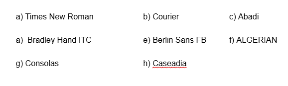
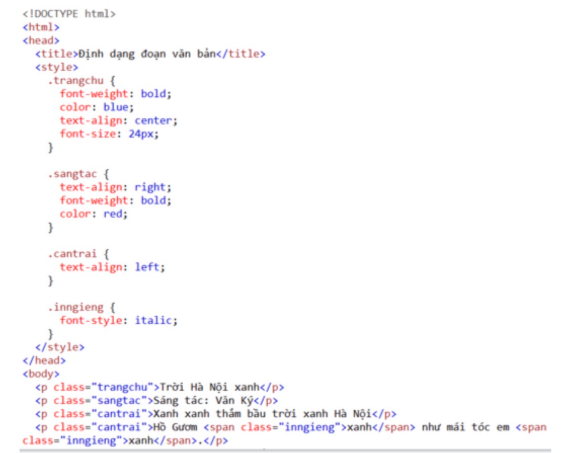

Luyện tập 1 trang 82 Tin học 12: Mỗi phông chữ sau đây thuộc loại nào?
Giải
Luyện tập 2 trang 82 Tin học 12: Hãy liệt kê các thuộc tính CSS liên quan đến định dạng đoạn văn bản sau
Giải
Vận dụng 1: Tìm hiểu thêm các thuộc tính phông chữ như font-variant, letter-spacing, word-spacing và text-shadow.
Giải
- font-variant: Thuộc tính này được sử dụng để xác định kiểu chữ viết hoa của văn bản. Giá trị phổ biến bao gồm: + normal: Chữ in thường. + small-caps: Chữ viết hoa nhỏ. - letter-spacing: Xác định khoảng cách giữa các kí tự. Có thể âm hoặc dương. Ví dụ: letter-spacing: 2px; - word-spacing: Xác định khoảng cách giữa các từ. Có thể âm hoặc dương. Ví dụ: word-spacing: 5px; - text-shadow: Thêm bóng cho văn bản (màu, độ mờ, vị trí). Ví dụ: text-shadow: 2px 2px 4px rgba(0,0,0,0.5);